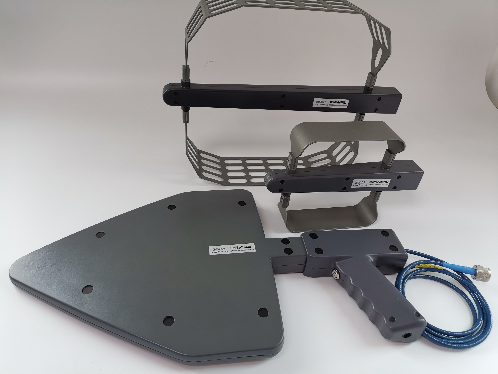

通过定向天线精确定位发射源和干扰源的查找，可以应用于 EMC 测试、场强扫描、基站检测维护、变电站电力系统检测维护、汽车 EMI 检测、医疗设备辐射、伪基站检测设备等领域。

手持定向天线套装包含不同频段的天线和内置低噪声放大器的手柄，天线与支撑手柄以盲插的方式配合成一体快速转换使用，即可实现垂直或水平极化方向信号的测试；单个天线也可以直接通过 N 型母头连接设备使用；手柄内置有低噪声放大器设计有"直通"和"放大"两种工作模式以提高接收信号的动态范围，可通过开关切换；外接有 N 型公头稳相低损超柔射频线，可直接连接频谱仪使用
用途:
常用于安全部门和无线电管理部门定位发射源和干扰源的查找，也可以应用于 EMC 测试、场强扫描、基站检测维护、变电站电力系统检测维护、汽车 EMI 检测、医疗设备辐射、伪基站检测设备等领域
特点:
手柄内置电池可连续工作时长大于 58 小时，携带方便、快捷、低成本、操作简单的测试解决方案，非常方便外携，对应有1/4英寸三脚架接口
©2021– by Joe